游戏管理
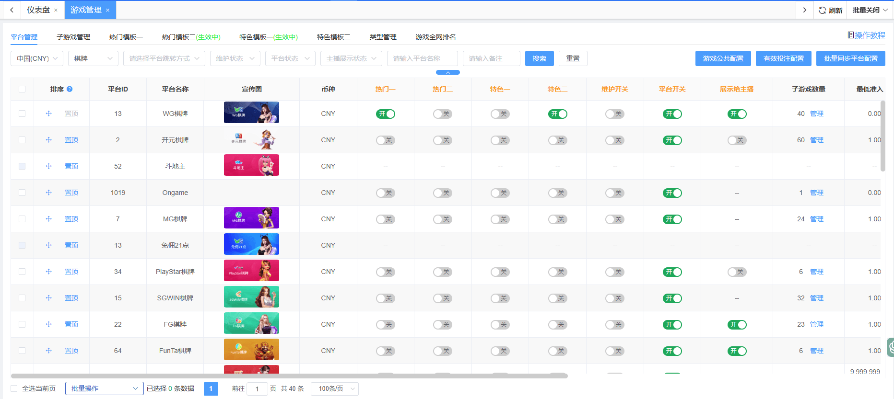
一、概述：
（1）平台管理：对所有平台进行管理，包括对平台进行排序
- 热门开关：设置平台加入热门模版展示的操作。
- 特色开关：设置平台加入特色模版展示的操作。
- 维护开关：设置平台维护状态的控制操作。
- 游戏开关：设置平台开启/关闭状态的控制操作。
- 展示给主播开关：设置平台是否展示在主播账号大厅。
- 算有效投注: 设置平台有效投注状态的控制操作。
- 子游戏数量: 展示该平台的子游戏数量, 点击可跳转至子游戏管理页面查看。
（2）子游戏管理：对所有子游戏进行管理，包括设置游戏的排序
- 热门开关：设置子游戏加入热门模版展示的操作。
- 特色开关：设置子游戏加入特色模版展示的操作。
- 维护开关：设置子游戏维护状态的控制操作。
- 游戏开关：设置子游戏开启/关闭状态的控制操作。
- 展示给主播开关：设置子游戏是否展示在主播账号大厅。
- 算有效投注: 设置子游戏有效投注状态的控制操作。
（3）热门模版一：对加入热门一的平台和子游戏进行管理，包括排序、备注、修改角标及移除操作（热门一和热门二只能同时开启一个）。
（4）热门模版二：对加入热门二的平台和子游戏进行管理，包括排序、备注、修改角标及移除操作（热门一和热门二只能同时开启一个）。
（5）特色模版一：对加入特色一的平台和子游戏进行管理，包括排序、备注、修改角标及移除操作（特色一和特色二只能同时开启一个或是都不开启）。
（6）特色模版二：对加入特色二的平台和子游戏进行管理，包括排序、备注、修改角标及移除操作（热门一和热门二只能同时开启一个或是都不开启）。
（7）类型管理：对游戏类型进行排序, 并且可以设置方形版式/竖型版式的行数配置，以及配置外部链接的跳转URL。
（8）游戏全网排名：通过对注单量的汇总，统计出最受欢迎的子游戏排名，并且支持查看子游戏的注单量、总投注、有效投注、损益、杀率等值的具体数值, 并支持将子游戏加入热门。
（9）游戏公共配置：包含游戏相关设置、强制下载APP设置、WG体育赔率设置等内容。
（10）有效投注配置：针对游戏类型设置有效投注计入比例。
二、用途：
（1）自营游戏+三方游戏：通过对游戏平台、子游戏、热门的操作，使业主可以操纵客户端的游戏状态。
（2）自营游戏+三方游戏：通过平台开关或维护开关，决定客户端游戏的展现状态形式。
三、功能说明：
1.平台管理
（1.1）平台管理功能模块说明：
- 对不同类型的平台进行排序（若类型选择下拉框选中全部平台，则不可进行排序）
- 对不同类型的平台设置热门状态
- 对不同类型的平台设置特色状态
- 对不同类型的平台设置入口开启/关闭状态
- 对不同类型的平台设置是否展示给主播帐号玩家
- 对不同类型的平台设置有效投注状态
- 对不同类型的平台准入金额、宣传图、备注
- 对不同类型的平台操作申请风险人工锁解锁或批量解锁
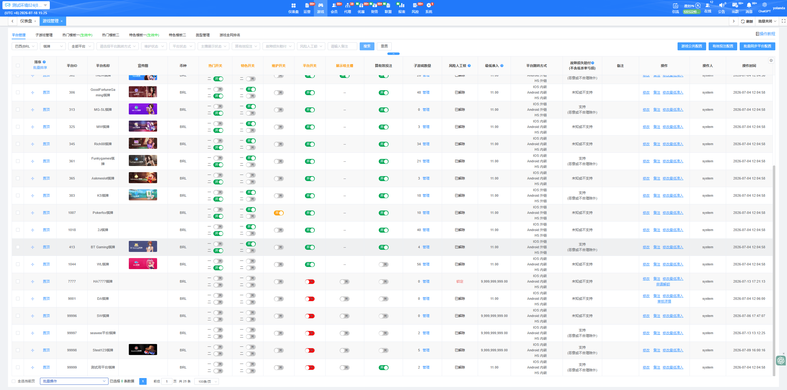
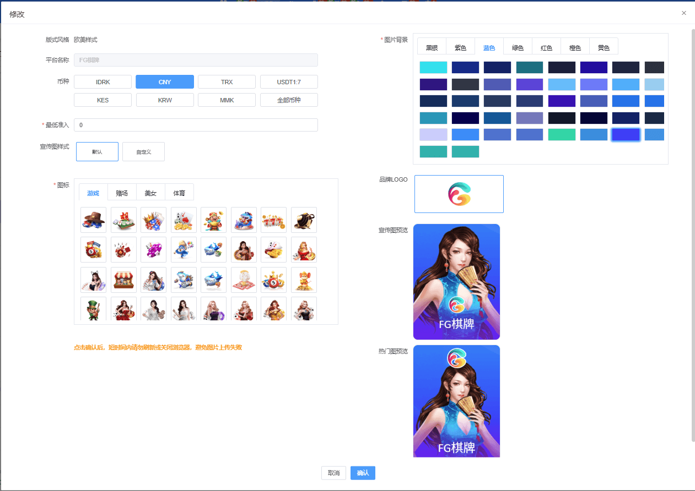
| 币种 | 平台类型筛选 | 平台名称搜索 | 备注/系统备注 |
| 所有系统支持的币种 | 棋牌、捕鱼、电子、真人、彩票、体育、斗鸡、电竞、房间局 | 支持模糊查询 | 支持模糊查询 |
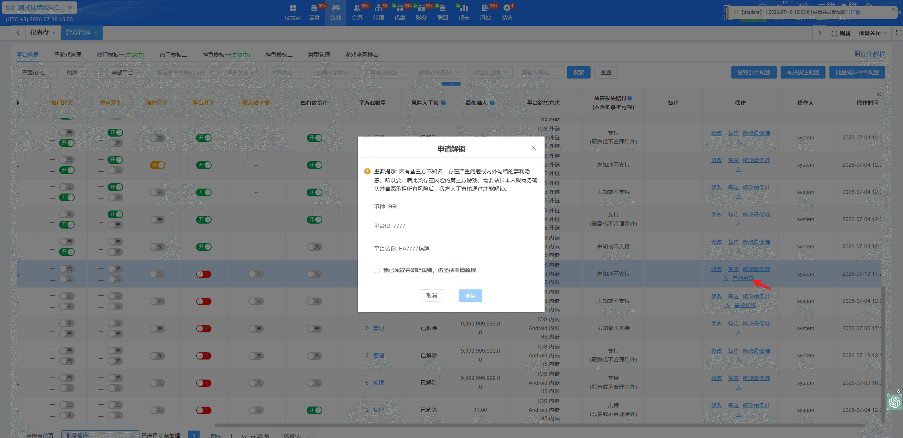
| 风险人工锁状态 | 操作列显示的按钮 | 含义与可执行操作 |
| 锁定 | 「申请解锁」 | 该平台 / 游戏被人工审核锁锁定。开关禁用，可点击「申请解锁」 |
| 审核中 | 「审核详情」 | 已提交解锁申请、等待技术后台审批。开关仍禁用，可点击「审核详情」查看进度；此时不能再次申请。 |
| 已解除（曾申请过） |
「审核详情」（查看历史记录） |
无锁定 / 审批已通过。开关可正常开启。若曾有申请记录，仍可点「审核详情」查看历史。 |
（1.3）平台管理列表字段说明：
| 字段名称 | 说明 | 是否超链接 | 显示规则 | 备注 |
|---|---|---|---|---|
| 排序 | 拖动按钮/置顶按钮、批量输入数字排序，直接进行相关排序，可支持隔行跳跃排序 | 否 | 常规 | 功能按钮 |
| 平台ID | 每个平台ID唯一不可重复，主要用于记录操作日志 | 否 | 常规 | |
| 平台名称 |
平台+分类名，如百胜棋牌，WG电子等 重复平台名称出现时会在旧线路平台名称下标记「旧线路」文案. |
否 | 常规 | |
| 币种 | 平台支持哪些币种 | 否 | 常规 | |
| 热门一 | 开启后该平台入口将显示在客户端热门类型中 | 否 | 常规 | 功能开关 |
| 热门二 | 开启后该平台入口将显示在客户端热门类型中 | 否 | 常规 | 功能开关 |
| 特色一 | 开启后该平台入口将显示在客户端特色类型中 | 否 | 常规 | 功能开关 |
| 特色二 | 开启后该平台入口将显示在客户端特色类型中 | 否 | 常规 | 功能开关 |
| 维护开关 | 开启后该平台标签或入口将在客户端展示，平台维护中，并且会踢出所有在平台游戏中的玩家 | 否 | 常规 | 功能开关 |
| 平台开关 | 关闭后该平台标签或入口将在客户端不展示，并且踢出所有在平台游戏中的玩家 | 否 | 常规 | 功能开关 |
| 展示给主播 | 开启后该平台标签或入口将在客户端展示, 仅限主播账号玩家 | 否 | 常规 | 功能开关 |
| 算有效投注 | 开启后该平台注单皆会计算有效投注 | 否 | 常规 | 功能开关 |
| 子游戏数量 | 该类型下平台所有的子游戏总数，点击管理后跳转到该平台的游戏管理页（目前只有棋牌，电子，捕鱼，彩票类型有子游戏） | 是 | 常规 | 功能按钮 |
| 风险人工锁 | 状态为【锁定】的平台将不对大厅开放，可通过操作列【申请解锁】入口提交解锁信息，审批通过后，该平台状态变为【已解除】，即该平台在大厅可见 | 否 | 常规 | |
| 最低准入 | 该平台的所有游戏进入的余额要求，大于等于设置的金额才可进入子游戏，准入金额必须大于注册赠送防止被套利 | 否 | 2位小数 | |
| 宣传图 | 宣传图分为【默认/自定义】，业主可自行选择使用哪种版本 | 否 |
根据不同平台卡片样式进行尺寸限制 |
|
| 平台跳转方式 | 区分IOS、Android、Web三个端口展示 | 否 |
常规 |
|
| 故障损失赔付 | 用于记录及展示平台赔付相关信息, 文案展示: 支持(恶意或不合理除外)、 未知或不支持 |
否 |
常规 |
|
| 备注 | 展示备注内容 | 否 | 常规 | |
| 操作 |
修改: 点击后弹出修改弹窗, 支持修改最低准入金额以及宣传图。 备注: 点击后弹出修改备注弹窗。 |
否 | 常规 | 功能按钮 |
| 操作人 | 最后一次进行操作的管理员账号 | 否 | 常规 | |
| 操作时间 | 最后一次进行操作的时间 | 否 | 常规 |
（1.5）游戏公共配置
①「新游戏默认热门位置」「新游戏默认特色位置」，可选「添加至第一位」（默认）或「添加至最后一位」，配置后，所有做「添加至热门 / 特色」的页面都按这个配置执行：热门模版一 / 二、特色模版一 / 二、游戏全网排名、游戏统计
②「前端游戏排序规则」，可按投注人数或金额自动生成客户端游戏顺序（修改后 4 小时内不能再次修改）
③「已首充才能进入游戏（未充值无法进入）」，开启后，未首充会员进入游戏展示带推荐活动和充值气泡的首充弹窗（推荐活动和充值气泡取会员-注册和验证-注册成功弹窗配置；若首充弹窗与存款弹窗冲突时，优先展示首充弹窗）
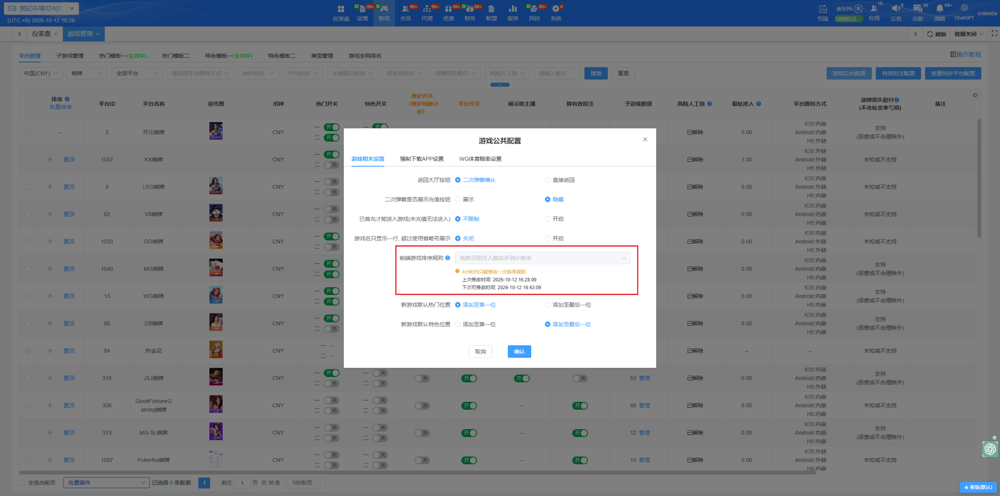
（1.6）有效投注配置
有效投注配置弹窗新增「体育和电竞」页签：电竞的开关配置逻辑与内容同体育，电竞开关默认全部关闭（需业主自行开启）
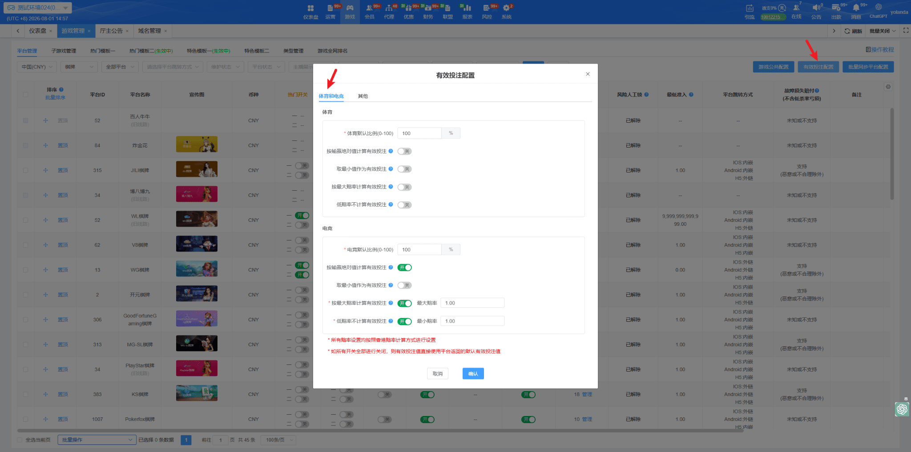
②新增「其他」页签：放除体育、电子以外类型的默认比例配置；电竞、体育、其他的默认比例都是必填
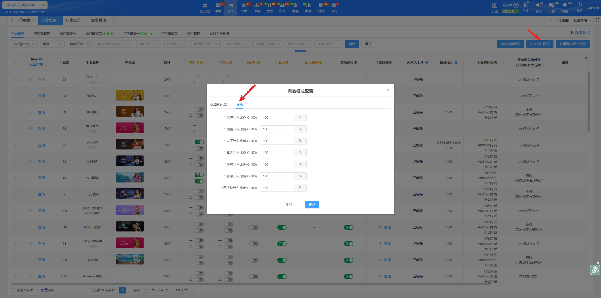
2. 子游戏管理
（2.1）子游戏管理功能模块说明：
- 对不同类型不同平台下的子游戏进行排序（默认显示棋牌类型）
- 对不同类型不同平台下的子游戏进行热门管理操作
- 对不同类型不同平台下的子游戏进行热门管理操作
- 操作维护开关，可将房间中正在进行游戏的玩家踢出，并且不可维护取消前，不可再次进入该游戏
- 可针对子游戏设置是否展示给主播账号玩家
- 对不同类型不同平台下的子游戏设置有效投注状态
- 可以针对子游戏进行备注
- 支持修改子游戏图片
- 支持修改子游戏角标样式, 角标样式包含以下四种: 无、推荐、新、火爆 (部份皮肤版式仅支持开启/关闭角标, 不支持配置角标样式)
- 可以将子游戏设置独立展示到类型, 开启此配置项后, 子游戏在大厅将与平台入口并行展示, 开启独立展示到类型的子游戏可以到平台管理页面调整排序
- 对不同类型不同平台下的子游戏操作申请风险人工锁解锁或批量解锁
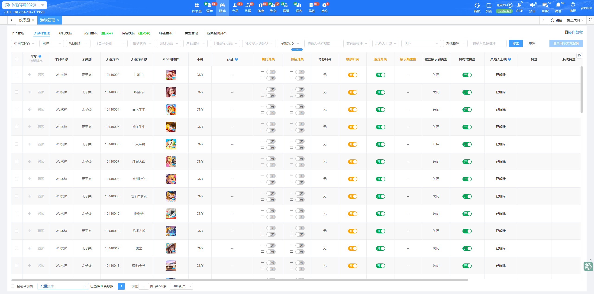
（2.2）子游戏管理筛选项说明：
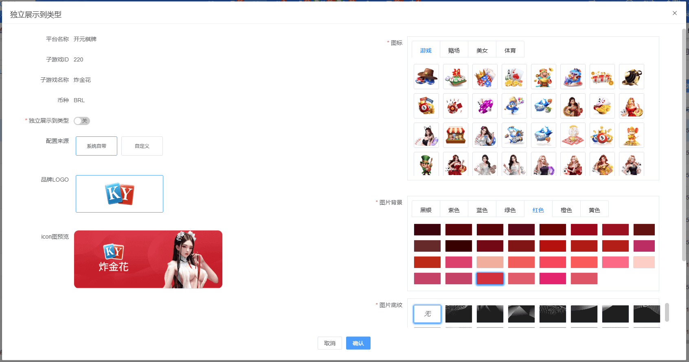
| 币种 | 游戏类型 | 平台类型 | 游戏名称搜索 | 备注/系统备注 |
| 所有系统支持的币种 | 棋牌、捕鱼、电子、体育、真人、彩票、房间局 | 平台名称+游戏类型 | 支持模糊查询 | 支持模糊查询 |
（2.3）子游戏管理列表字段说明：
| 字段名称 | 说明 | 是否超链接 | 显示规则 | 备注 |
| 排序 | 拖动按钮/置顶按钮、批量输入数字排序，直接进行相关排序，可支持隔行跳跃排序 | 否 | 常规 | 功能按钮 |
| 平台名称 | 平台名称展示 | |||
| 子类别 | 子类别名称展示 | |||
| 游戏ID | 所有子游戏所有场次的ID唯一，主要用于记录操作日志 | 否 | 常规 | |
| 子游戏名称 | 子游戏名称展示 | 否 | 常规 | |
| 币种 | 该子游戏支持哪些币种 | 否 | 常规 | |
| 认证 | 列出该游戏目前拥有的所有认证资讯, 如GLI, BMM, PAGCOR, GA...等 | 否 | 常规 | |
| 热门一 | 加入热门一模块的子游戏开关 | 否 | 常规 | 功能开关 |
| 热门二 | 加入热门二模块的子游戏开关 | 否 | 常规 | 功能开关 |
| 特色一 | 开启后该平台入口将显示在客户端特色类型中 | 否 | 常规 | 功能开关 |
| 特色二 | 开启后该平台入口将显示在客户端特色类型中 | 否 | 常规 | 功能开关 |
| 角标名称 | 客户端展示角标的样式 | 否 | 常规 | |
| 维护开关 | 子游戏维护开关控制（开启后将无法进入子游戏，房间内的玩家也会被踢出房间） | 否 | 常规 | 功能开关 |
| 游戏开关 | 子游戏游戏开关控制（关闭后将不显示该子游戏入口） | 否 | 常规 | 功能开关 |
| 展示给主播 | 开启后, 将在客户端展示此游戏, 仅限主播账号玩家 | 否 | 常规 | 功能开关 |
| 算有效投注 | 开启后该游戏注单将会计入有效投注 | 否 | 常规 | 功能开关 |
| 风险人工锁 |
状态为【锁定】的平台将不对大厅开放，可通过操作列【申请解锁】入口提交解锁信息，审批通过后，该平台状态变为【已解除】，即该平台在大厅可见 当平台层级的风险人工锁状态不是「已解除」时，其下所有子游戏的风险人工锁一律显示为「锁定」，且子游戏的「申请解锁」按钮会置灰（不可单独申请） 即：要先让平台层级解除锁定，子游戏才能恢复正常操作 |
否 | 常规 | |
| 独立展示到类型 | 开启后, 子游戏将在客户端与平台入口并行展示 | 否 | 常规 | |
| 子游戏icon | 子游戏图片 | 否 | 常规 | |
| 备注 | 展示备注内容 | 否 | 常规 | |
| 操作人 | 最后一次进行操作的管理员账号 | 否 | 常规 | |
| 操作时间 | 最后一次进行操作的时间 | 否 | 常规 |
3. 热门模版一
（3.1）热门模版一功能模块说明：
- 对加入热门一的平台和子游戏进行排序（可对平台入口及子游戏一起排序）、移除、修改角标样式 (热门类别为子游戏才可以修改角标)以及备注
- 热门管理一游戏最多可添加100个
- 业主可自行决定是否启用热门管理一
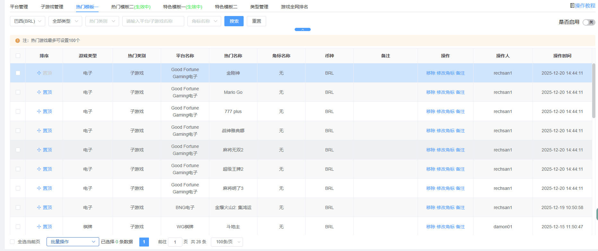
（3.2）热门模版一列表字段说明：
| 字段名称 | 说明 | 是否超链接 | 显示规则 | 备注 |
| 排序 | 拖动按钮/置顶按钮、批量输入数字排序，直接进行相关排序，可支持隔行跳跃排序 | 否 | 常规 | |
| 游戏类型 | 棋牌、捕鱼、电子、彩票等 | 否 | 常规 | |
| 热门类别 | 平台或子游戏 | 否 | 常规 | |
| 平台名称 | 平台名称 | 否 | 常规 | |
| 热门名称 | 子游戏：子游戏名称；平台：平台名称 | 否 | 常规 | |
| 角标名称 | 无、推荐、新、火爆 | 否 | 常规 | |
| 币种 | 该平台或子游戏支持哪些币种 | 否 | 常规 | |
| 备注 | 展示备注内容 | 否 | 常规 | |
| 操作 |
移除：点击后弹出确认框，确定移除后热门模版一列表中将不显示该游戏，且游戏/平台的热门一状态为关。 修改角标: 点击后弹出修改角标弹窗。 |
否 | 常规 | 功能按钮 |
| 操作人 | 操作人：最后一次进行操作的管理员账号 | 否 | 常规 | |
| 操作时间 | 操作时间：最后一次进行操作的时间 | 否 | 常规 |
4. 热门模版二
（4.1）热门模版二功能模块说明：
- 对加入热门二的平台和子游戏进行排序（可对平台入口及子游戏一起排序）、移除、修改角标样式 (热门类别为子游戏才可以修改角标)以及备注
- 热门管理二游戏最多可添加100个
- 业主可自行决定是否启用热门管理二
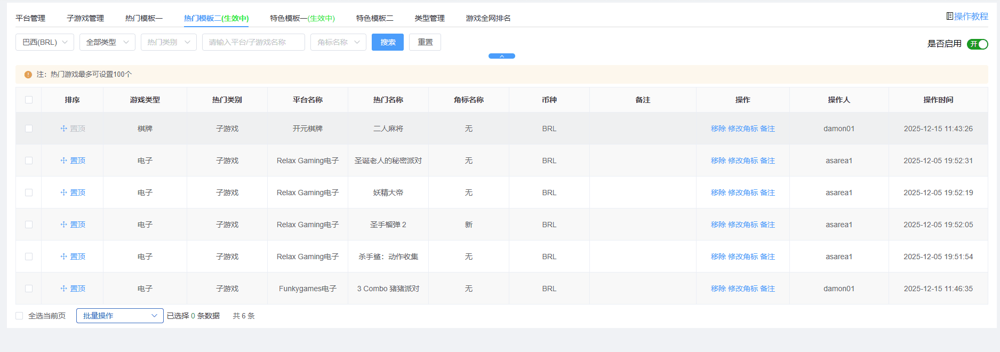
（4.2）热门模版二列表字段说明：
| 字段名称 | 说明 | 是否超链接 | 显示规则 | 备注 |
| 排序 | 拖动按钮/置顶按钮、批量输入数字排序，直接进行相关排序，可支持隔行跳跃排序 | 否 | 常规 | |
| 游戏类型 | 棋牌、捕鱼、电子、彩票............... | 否 | 常规 | |
| 热门类别 | 平台或子游戏 | 否 | 常规 | |
| 平台名称 | 平台名称 | 否 | 常规 | |
| 热门名称 | 子游戏：子游戏名称；平台：平台名称 | 否 | 常规 | |
| 角标名称 | 无、推荐、新、火爆 | 否 | 常规 | |
| 币种 | 该平台或子游戏支持哪些币种 | 否 | 常规 | |
| 备注 | 展示备注内容 | 否 | 常规 | |
| 操作 |
移除：点击后弹出确认框，确定移除后热门模版二列表中将不显示该游戏，且游戏/平台的热门二状态为关。 修改角标: 点击后弹出修改角标弹窗。 |
否 | 常规 | 功能按钮 |
| 操作人 | 操作人：最后一次进行操作的管理员账号 | 否 | 常规 | |
| 操作时间 | 操作时间：最后一次进行操作的时间 | 否 | 常规 |
5. 特色模版一
（5.1）特色模版一功能模块说明：
- 对加入特色一的平台和子游戏进行排序（可对平台入口及子游戏一起排序）、移除以及备注
- 特色模版一游戏最多可添加100个
- 特色设置弹窗内可操作特色模版开关、特色名称、展示位置、特色样式
- 展示位置选择每个类型单独顶部时, 不需配置特色样式
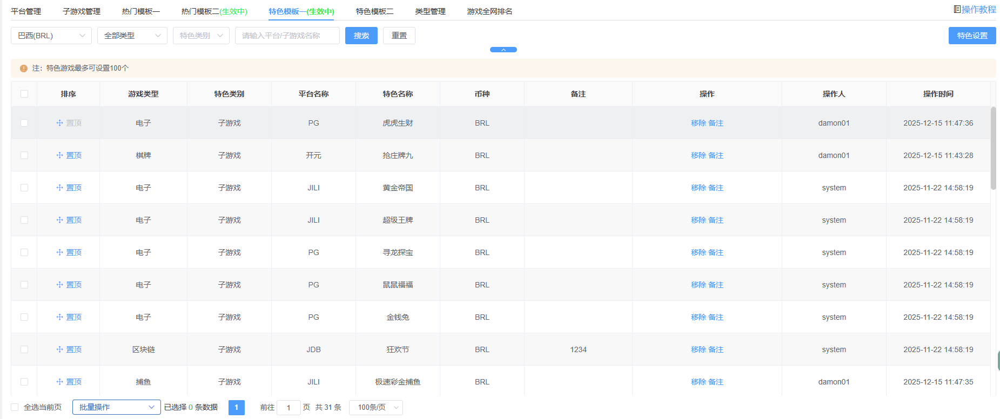
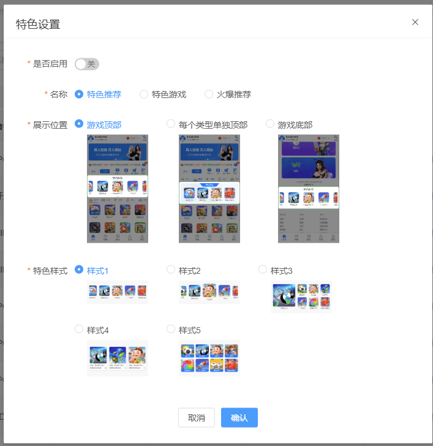
（5.2）特色模版一列表字段说明：
| 字段名称 | 说明 | 是否超链接 | 显示规则 | 备注 |
| 排序 | 拖动按钮/置顶按钮、批量输入数字排序，直接进行相关排序，可支持隔行跳跃排序 | 否 | 常规 | |
| 游戏类型 | 棋牌、捕鱼、电子、彩票... | 否 | 常规 | |
| 特色类别 | 平台或子游戏 | 否 | 常规 | |
| 平台名称 | 平台名称 | 否 | 常规 | |
| 特色名称 | 子游戏：子游戏名称；平台：平台名称 | 否 | 常规 | |
| 币种 | 该平台或子游戏支持哪些币种 | 否 | 常规 | |
| 备注 | 展示备注内容 | 否 | 常规 | |
| 操作 |
移除：点击后弹出确认框，确定移除后特色模版一列表中将不显示该游戏，且游戏/平台的特色一状态为关。 备注: 点击后弹出修改备注弹窗。 推荐文案: 点击后弹出推荐文案弹窗(特色样式为样式4时才需配置文案内容)。 |
否 | 常规 | 功能按钮 |
| 操作人 | 操作人：最后一次进行操作的管理员账号 | 否 | 常规 | |
| 操作时间 | 操作时间：最后一次进行操作的时间 | 否 | 常规 |
6. 特色模版二
（6.1）特色模版二功能模块说明：
- 对加入特色二的平台和子游戏进行排序（可对平台入口及子游戏一起排序）、移除以及备注
- 特色模版二游戏最多可添加100个
- 特色设置弹窗内可操作特色模版开关、特色名称、展示位置、特色样式
- 展示位置选择每个类型单独顶部时, 不需配置特色样式
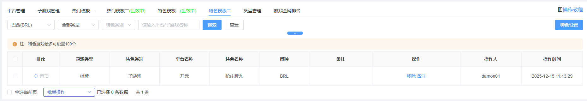
（5.2）特色模版二列表字段说明：
| 字段名称 | 说明 | 是否超链接 | 显示规则 | 备注 |
| 排序 | 拖动按钮/置顶按钮、批量输入数字排序，直接进行相关排序，可支持隔行跳跃排序 | 否 | 常规 | |
| 游戏类型 | 棋牌、捕鱼、电子、彩票... | 否 | 常规 | |
| 特色类别 | 平台或子游戏 | 否 | 常规 | |
| 平台名称 | 平台名称 | 否 | 常规 | |
| 特色名称 | 子游戏：子游戏名称；平台：平台名称 | 否 | 常规 | |
| 币种 | 该平台或子游戏支持哪些币种 | 否 | 常规 | |
| 备注 | 展示备注内容 | 否 | 常规 | |
| 操作 |
移除：点击后弹出确认框，确定移除后特色模版二列表中将不显示该游戏，且游戏/平台的特色二状态为关。 备注: 点击后弹出修改备注弹窗。 推荐文案: 点击后弹出推荐文案弹窗(特色样式为样式4时才需配置文案内容)。 |
否 | 常规 | 功能按钮 |
| 操作人 | 操作人：最后一次进行操作的管理员账号 | 否 | 常规 | |
| 操作时间 | 操作时间：最后一次进行操作的时间 | 否 | 常规 |
5. 类型管理
（5.1）类型管理功能模块说明：
1、对游戏平台【热门、棋牌、捕鱼、真人、电子、体育、斗鸡、彩票、俱乐部、朋友局、自定义添加】进行客户端隐藏/展示开关控制；
2、可针对不同类型设置对应的首页显示行数，以及二级页面显示行数；
3、可针对于币种进行区分控制，单个币种单个线路（俱乐部+朋友局只能针对于全部币种控制）
4、游戏数量少的小类型可以通过列表上的「并入到更多」开关合并进「更多」；只有棋牌、捕鱼、真人、体育、电子、斗鸡、区块链、电竞、彩票这 9 类才有这个开关
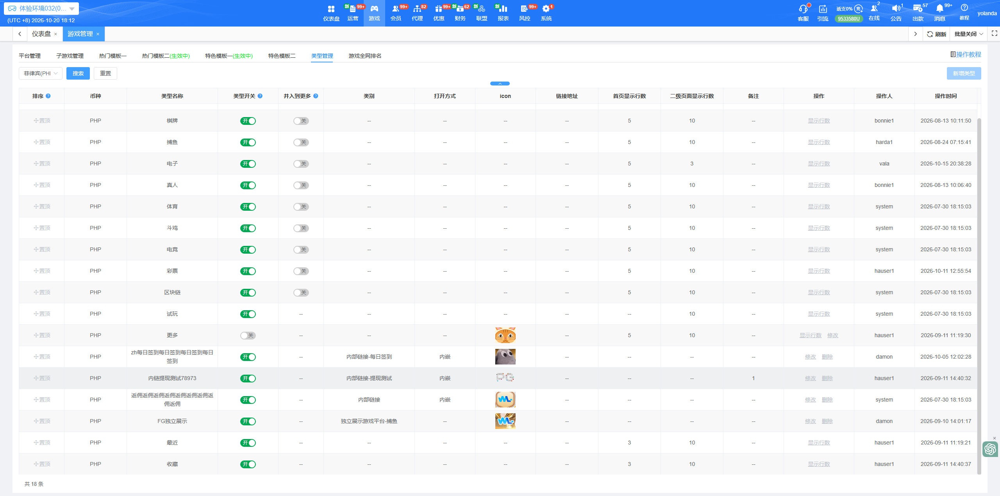
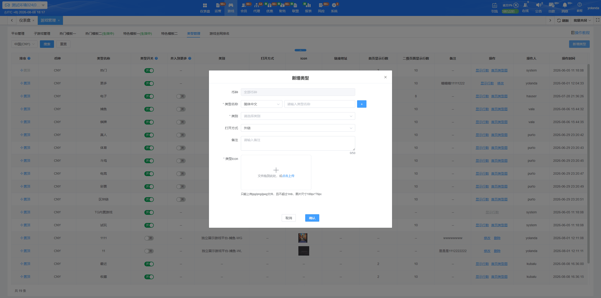
（5.2）类型管理表字段说明：
| 字段名称 | 说明 | 是否超链接 | 显示规则 | 备注 |
| 排序 | 拖动按钮/置顶按钮，直接进行相关排序，可支持隔行跳跃排序 | 否 | 常规 | |
| 币种 | 该类型支持哪些币种 | 否 | 常规 | |
| 类型名称 | 更多、最近、收藏、棋牌、捕鱼、电子、彩票............... | 否 | 常规 | |
| 类型开关 | 控制客户端展示或者隐藏对应类型 | 否 | 常规 | 功能按钮 |
| 并入到更多 | 可以把数量少的小类型通过该功能合并进「更多」 | 否 | 常规 | 功能按钮 |
| 首页显示行数 | 该类型在客户端首页显示几行 | 否 | 常规 | |
| 二级页面显示行数 | 该类型在客户端二级页面显示几行 | 否 | 常规 | |
| 操作 | 可设置首页显示行数，二级页面显示行数 | 否 | 常规 | 功能按钮 |
| 操作人 | 操作人：最后一次进行操作的管理员账号 | 否 | 常规 | |
| 操作时间 | 操作时间：最后一次进行操作的时间 | 否 | 常规 |
6. 游戏全网排名
（6.1）游戏全网排名功能模块说明：
1、根据子游戏的注单量统计出最受玩家喜爱的子游戏前50排名，并且区分币种、游戏类型、平台;
2、统计子游戏的注单量、总投注、有效投注、损益、杀率等值的具体数值；
3、平台下拉选单只会显示有在这前50排名里的平台;
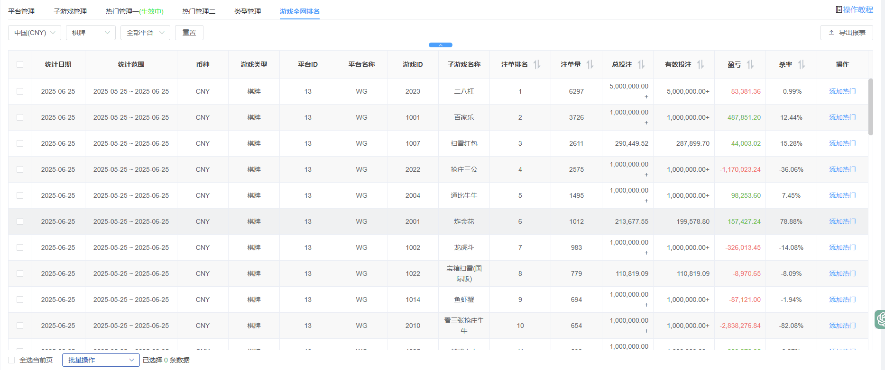
（6.2）游戏全网排名表字段说明：
| 字段名称 | 说明 | 是否超链接 | 显示规则 | 备注 |
| 统计日期 | 根据当前站点的时区，统计日期为每天统计 | 否 | 常规 | |
| 统计范围 | 一个月的统计时间 | 否 | 常规 | |
| 币种 | 该币种支持的子游戏 | 否 | 常规 | |
| 游戏类型 | 棋牌、捕鱼、电子、彩票... | 否 | 常规 | |
| 平台ID | 平台唯一生成ID | 否 | 常规 | |
| 平台名称 | 平台名称展示 | 否 | 常规 | |
| 游戏ID | 子游戏唯一生成ID | 否 | 常规 | |
| 子游戏名称 | 子游戏名称展示 | 否 | 常规 | |
| 注单排名 | 根据一个月的注单量统计，排名TOP1-100 | 否 | 常规 | |
| 注单量 | 根据用户的注单量统计，倒序排名 | 否 | 常规 | |
| 总投注 | 根据用户的总投注，倒序排名 | 否 | 常规 | |
| 有效投注 | 根据用户的有效投注统计，倒序排名 | 否 | 常规 | |
| 损益 | 根据用户的损益统计，倒序排名 | 否 | 常规 | |
| 杀率 | 根据用户的杀率统计，倒序排名 | 否 | 常规 | |
| 添加热门 | 可将该游戏添加至热门里 | 否 | 常规 | 功能按钮 |
7. 游戏管理设置：包含游戏相关设置、强制下载APP设置、WG体育赔率设置等内容。
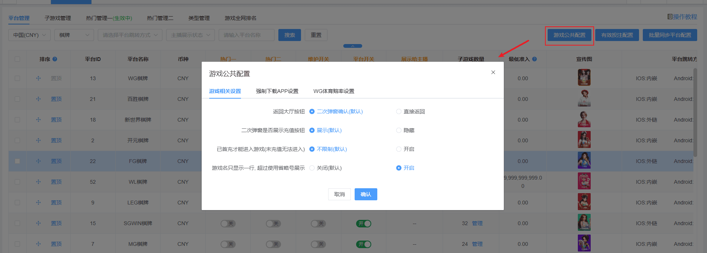
（7.1）字段说明：
当会员是从渠道注册的并且该渠道的展示APP下载提示开关为开启状态时, 会跳过游戏管理这边的公共配置内容。(包含已首充才能进入游戏以及强制下载APP相关设置)
【游戏相关设置】
- 返回大厅按钮：客户端在游戏内点击返回大厅按钮后是否需要展示二次弹窗确认。默认为展示二次弹窗。
- 二次弹窗是否展示充值按钮: 当返回大厅按钮勾选展示二次弹窗时, 需设置二次弹窗内是否展示充值按钮。默认为展示。
- 已首充才能进入游戏（未充值无法进入）：同原本的强制会员首充，会员必须完成首充后才能进入游戏。默认不限制
- 游戏名称只显示一行,超过使用省略号展示: 可自主选择大厅游戏名称显示方式, 关闭时为两行展示（默认），开启后统一为单行展示并超出省略。
【强制下载APP设置】
- 强制要求下载APP：H5端必须要下载并安装后才能进入游戏游玩，并且开启后会展示以下两项新功能。默认不限制。此功能对历史站点（2024/4/10之前）有开启过强制要求下载APP功能的站点，则以下两个开关皆为关闭。之后的站点则配置的默认项。
- 仅限已首充会员强制下载APP：默认开启，开启的话则仅限制已首充的会员做强制下载APP，未首充的会员则不在此限制。关闭之后，则是全部都限制。此功能对历史站点（2024/4/10之前）有开启过强制要求下载APP功能的站点，则以下两个开关皆为关闭。之后的站点则配置的默认项。
- 仅限Android设备强制下载APP：推荐默认开启，开启的话则仅限制Android的设备强制下载APP，苹果用户则不在此限至。关闭之后，则是全部都限制。此功能对历史站点（2024/4/10之前）有开启过强制要求下载APP功能的站点，则以下两个开关皆为关闭。之后的站点则配置的默认项。
- APP类型(可多选): 当强制要求下载APP开启时, 可以设置在客户端要展示哪些APP类型下载按钮,选项内容包含: 极速APP、原生APP、PWA快捷APP。默认全部勾选。(PWA快捷APP勾选后只会在安卓设备展示)
- 弹窗提示语: 可自定义强制下载APP弹窗文案, 分为系统自带及自定义, 自定义文案字数最大为500字，如果添加参数变量会超过字数限制时,就不给予添加。
- 充值次数触发强转原生APP: 当会员充值次数≥大于或等于x 次时，就强制要求他下载原生APP才能游戏, 默认设置99999次, 最小为0。
- 转原生提示语 : 可自定义强制下载APP弹窗文案, 分为系统自带及自定义, 自定义文案字数最大为500字，如果添加参数变量会超过字数限制时,就不给予添加。
【WG体育赔率设置】
- 展示目前所有的赔率方案并支持自由切换
8. 有效投注配置：针对游戏类型设置有效投注默认比例以及调整不计入有效投注的平台/游戏清单
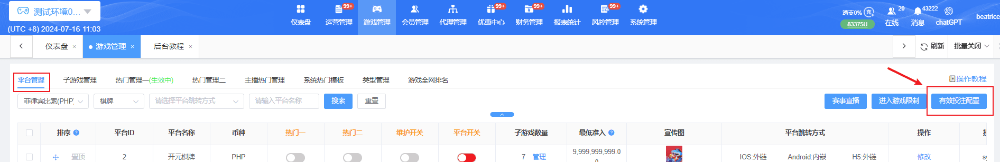
（8.1）有效投注配置功能模块说明：
1、针对游戏类型设置有效投注设置: 可针对不同游戏类型设置默认比例值, 以及针对体育类型提供计算有效投注的规则设置
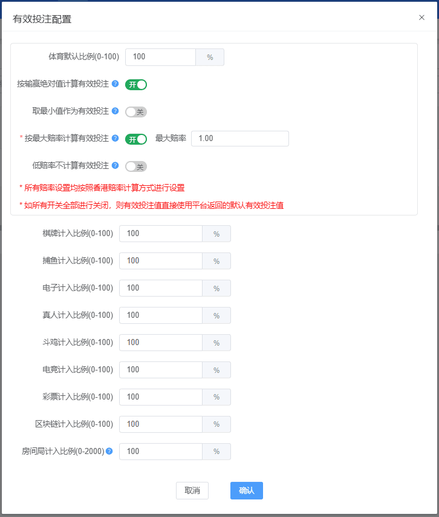
（8.2）有效投注配置字段说明：
- 「按最大倍率计算有效投注」开启时, 需设定最大赔率。
- 「低赔率不计算有效投注」开启时, 需设定最小赔率。
- 「按最大倍率计算有效投注」及「低赔率不计算有效投注」皆开启时，最大倍率设定值不可小于最小赔率的设定值。
- 计入比例: 有效投注计算规则按照现有取有效投注的值*默认比例。
- 房间局计入比例区间为0%~2000%, 默认为100%,
- 其他游戏类型比例区间为0%~100%, 默认为100%,